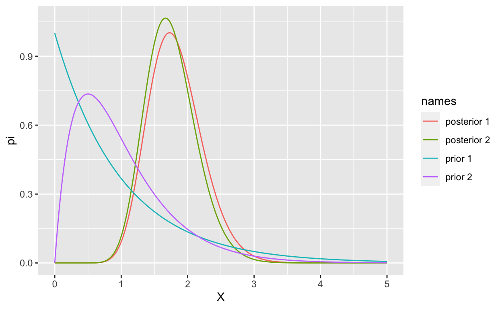

Informed decision-making comes from a long tradition of guessing and then blaming others for inadequate results. — Scott Adams (Gilbert comic strip)
Bayesian Inference
The distinguishing aspect of Bayesian statistics is the conceptualisation of the parameter as a probability distribution rather than a fixed quantity. We can use this to make inference directly rather than interpret the uncertainty in terms of the random sample via the sampling distribution because we express the uncertainty about the parameter as a probability distribution. We can use the posterior distribution to make direct probabilistic statements about the parameter in some ways (confidence or credible intervals). While this makes interpreting interval estimates more straightforward, it is more computationally demanding as it requires choosing an appropriate prior and evaluating the posterior distribution. In some cases, there are no analogous procedures to classical or frequentist approaches (i.e. hypothesis testing). Lastly, it is important to recognise and understand the influence of the parameter’s prior distribution on the results of analyses.
Thus we will examine three approaches to inference in the Bayesian paradigm: interval estimation, hypothesis testing, and decision theory. Each of these approaches has its analogue with classical techniques, and we will explore these contrasts and comparisons as part of exploring these concepts.
Credible Intervals
Interval estimation in the Bayesian context uses the posterior distribution to directly compute an interval-based on a specified probability
Credible Intervals
Given the posterior distribution \(\pi(\theta|\mathbf{x})\) the \(1-\alpha\) credible set is \[C(\theta)=\left\{\theta:Pr\left(\theta\in C(\theta)\right)=1-\alpha\right\}\] For univariate cases this can be defined by the interval \([a,b]\) \[ \int_a^b\pi(\theta|\mathbf{y})d\theta=1-\alpha \] thus \[ C(\theta)=\{\theta:\theta\in[a,b]\}. \] As in the case of confidence intervals, there are limited analytical tools available to minimise \(b-a\) for a given \(1-\alpha\). In many instances, numerical techniques are necessary.
A set \(C^*(\theta)=[a,b]\) that minimises \(b-a\) for a given \(1-\alpha\) \[ C(\theta)=\min_{b-a}\int_{a}^b\pi(\theta|\mathbf{y})d\theta=1-\alpha \] is the highest posterior density credible interval.
Hypothesis Testing
For hypotheses of the form \[ H_0:\theta\in \theta_0\quad\mbox{vs}\quad H_A:\theta\in \theta_0^c \] the posterior probabilities are equivalent to testing the hypotheses \[ \begin{align} Pr(\theta\in\theta_0|\mathbf{y})&\equiv Pr(\mbox{H_0 is True}|\mathbf{y})\\ Pr(\theta\in\theta_0^c|\mathbf{y})&\equiv Pr(\mbox{H_0 is False}|\mathbf{y}). \end{align} \]
But in the case of the point-null hypothesis \[ H_0:\theta=\theta_0\quad\mbox{vs}\quad H_A:\theta\neq \theta_0 \] \(Pr(\theta=\theta_0)=0\) which prevents meaningful hypothesis testing. (The exception being when the parameter space is discrete, but this is a rare occurrence.)
Bayes Factors
Bayes factors are one alternative to classical hypothesis testing. If there are two competing models, \(M_{1}\) and \(M_{2}\), we compare the marginal likelihood of the hypotheses they represent. The marginal likelihood is the probability of observing the data for a given model, i.e. \(P(\text{data}) = P(\boldsymbol{x})\) (this is the normalising constant in Bayes rule above!). Since we have two different models we add the conditioning: \[ Pr(\mathbf{x}\vert~M_{i}) = Pr(\boldsymbol{x}\vert M_{i}) = \int_{\theta_{i}} f(\boldsymbol{x}\vert\theta_{i}, M_{i})\pi(\theta_{i}\vert M_{i}) \text{ d}\theta_{i} \] but can also be written as \[ Pr(\boldsymbol{x}\vert M_{i}) =\frac{Pr(M_{i} \vert \boldsymbol{x})Pr(\boldsymbol{x})}{Pr(M_{i})} \] using Bayes rule. The Bayes factor comparing these two models is \[ BF_{12} = \frac{Pr(\boldsymbol{x}~\vert~M_{1})}{Pr(\boldsymbol{x}\vert M_{2})} = \frac{Pr(M_{1} \vert \boldsymbol{x}) Pr(M_{2})}{Pr(M_{2}\vert\boldsymbol{x}) Pr(M_{1})} \] the interpretation of \(BF_{12}\) is given by tables, but there is more than one that can be used.
Bayesian Decision Theory
Theory questions
Question 1
Assume \(x_{1}, x_{2}, \ldots, x_{n}\) are exponentially distributed with rate \(\lambda\), show that the gamma prior \(\lambda \sim \text{Gamma}(\alpha,\beta)\) is conjugate for the exponential distribution. What is the marginal likelihood of the data? Show that the posterior predictive distribution is a Lomax distribution.
Solution:
The likelihood is \[ \pi(\boldsymbol{x}~\vert~\lambda) = \lambda^{n} \exp\left\{-\lambda \sum_{i=1}^{n}x_{i}\right\} \] whilst the prior is \[ \pi(\lambda) = \frac{\beta^{\alpha}}{\Gamma(\alpha)} \lambda^{\alpha-1} \exp\left\{-\beta\lambda\right\} \] which generates a posterior \[ \pi(\lambda~\vert~\boldsymbol{x}) \propto \lambda^{n} \exp\left\{-\lambda \sum_{i=1}^{n}x_{i}\right\} \lambda^{\alpha-1} \exp\left\{-\beta\lambda\right\} = \lambda^{\alpha+n - 1} \exp\left\{-\lambda \left(\beta + \sum_{i=1}^{n} x_{i} \right)\right\}. \] By inspection, we see that \((\lambda~\vert~\boldsymbol{x}) \sim \text{Gamma}(\alpha + n, \beta + s)\) where \(s = \sum_{i=1}^{n}x_{i}\). The prior and the posterior are in the same family, therefore the Gamma prior is conjugate for the exponential distribution.
The marginal likelihood of the data is \[ \pi(\boldsymbol{x}) = \frac{\beta^{\alpha}/\Gamma(\alpha)}{(\beta+s)^{\alpha+n}/\Gamma(\alpha+n)} = \frac{\beta^{\alpha}\Gamma(\alpha+n)}{(\beta+s)^{\alpha+n}\Gamma(\alpha)}. \]
The posterior predictive is \[ \begin{aligned} \pi(\tilde{x}~\vert~\boldsymbol{x}) &= \int_{0}^{\infty}\pi(\tilde{x}~\vert~ \lambda)\pi(\lambda~\vert~\boldsymbol{x}) \text{ d}\lambda \\ &= \frac{(\beta+s)^{\alpha+n}}{\Gamma(\alpha+n)}\int_{0}^{\infty} \lambda\exp\{-\lambda\tilde{x}\} \lambda^{\alpha+n - 1} \exp\left\{-\lambda \left(\beta + \sum_{i=1}^{n} x_{i} \right)\right\} \text{ d}\lambda \\ &= \frac{(\beta+s)^{\alpha+n}}{\Gamma(\alpha+n)}\int_{0}^{\infty} \lambda^{\alpha+n} \exp\left\{-\lambda \left(\beta + \sum_{i=1}^{n} x_{i} + \tilde{x}\right)\right\} \text{ d}\lambda \\ &= \frac{(\beta+s)^{\alpha+n}}{\Gamma(\alpha+n)} \frac{\Gamma(\alpha+n+1)}{(\beta+s +\tilde{x})^{\alpha+n+1}}\\ &= \frac{(\alpha+n)(\beta+s)^{\alpha+n}}{(\beta+s +\tilde{x})^{\alpha+n+1}} \\ &= \frac{(\alpha+n)(\beta+s)^{-1}}{(1 + \frac{\tilde{x}}{\beta+s})^{\alpha+n+1}} \end{aligned} \]
Question 2
x<-c(2, 1, 4, 3, 4, 2, 1, 2, 0, 0)
Find the posterior distribution of \(\lambda|\mathbf{x}\)
Find the \(95\%\) credible interval \(C\) for \(\lambda\) and \(\lambda|\mathbf{x}\)
Find \[ Pr(\lambda)>1\text{ and } Pr(\lambda>1|\mathbf{x}) \]
Plot the prior and posterior of \(\lambda\) together, comment? How did the data effect the posterior compared to the prior. Repeat this for \[ \pi(\lambda)=e^{-\lambda} \]
Consider a data from a Poisson process (i.e. realisations of a Poisson random variable \(X\)) where \[
Pr(X=x|\lambda)=\frac{\lambda^xe^{-\lambda}
}{x!}
\] Assume a prior for \(\lambda\) \[
\pi(\lambda)=4\lambda e^{-2\lambda}.
\] For the data \(\mathbf{x}=(x_1,x_2,\ldots,x_n)\) i.e.
x<-c(2, 1, 4, 3, 4, 2, 1, 2, 0, 0)
- Find the posterior distribution of \(\lambda|\mathbf{x}\)
For \(\sum x_i=19\) and \(n=10\)The posterior distribution is \[ \pi(\lambda|\mathbf{y})=\frac{12^{21}\lambda^{20}e^{-12\lambda}}{\Gamma(21)} \]
- Find the \(95\%\) credible interval \(C\) for \(\lambda\) and \(\lambda|\mathbf{x}\)
x<-c(2, 1, 4, 3, 4, 2, 1, 2, 0, 0)
sumx<-sum(x)
n<-length(x)
alpha<-2+sumx
beta<-2+n
## Just compute the equal tail credible interval
ll<-qgamma(0.025,shape = alpha,rate = beta)%>%round(.,2)
ul<-qgamma(0.975,shape = alpha, rate = beta)%>%round(.,2)The credible interval \(C\) is (1.08,2.57)
- Find \[ Pr(\lambda)>1\text{ and } Pr(\lambda>1|\mathbf{x}) \]
x<-c(2, 1, 4, 3, 4, 2, 1, 2, 0, 0)
sumx<-sum(x)
n<-length(x)
alpha<-2+sumx
beta<-2+n
## Just compute the equal tail credible interval
prior_prob<-pgamma(1,shape = 2,rate = 2)%>%round(.,2)
post_prob<-pgamma(1,shape = alpha, rate = beta)%>%round(.2)\[ \begin{align} Pr(\lambda<1)&=0.59\\ Pr(\lambda<1|\mathbf{x})&=0 \end{align} \]
- Plot the prior and posterior of \(\lambda\) together, comment? How did the data effect the posterior compared to the prior.
Repeat this for \[ \pi(\lambda)=e^{-\lambda} \]
x<-c(2, 1, 4, 3, 4, 2, 1, 2, 0, 0)
sumx<-sum(x)
n<-length(x)
alpha<-2+sumx
beta<-2+n
x<-seq(0,5,len=1000)
prior_2<-dgamma(x,shape = 2, rate = 2)
prior_1<-dgamma(x, shape = 1 , rate = 1)
posterior_2<-dgamma(x,shape = alpha, rate = beta)
posterior_1<-dgamma(x,shape = alpha -1, rate = beta-1)
df<-tibble(X=rep(x,4),pi = c(prior_2,posterior_2,prior_1,posterior_1),names=c(rep("prior 2",1000),rep("posterior 2",1000),rep("prior 1",1000),rep("posterior 1",1000)))
ggplot(df,aes(x=X,y = pi,color=names))+
geom_line()
Question 3
Consider the the absolute and quadratic loss functions, \(L_{1}(\beta, \hat{\beta}) = \vert\beta - \hat{\beta} \vert\) and \(L_{2}(\beta, \hat{\beta}) = (\beta - \hat{\beta})^{2}\) respectively.
We are going to perform a simulation to test certain estimators (posterior mean, median, and mode) for these loss functions in a Bayesian context. Suppose you have data \((y_{i} ~ \vert ~ \beta) \sim \text{Weibull}(\lambda, k = 0.4)\) distribution and wish to use prior on \(\beta \sim \text{invGamma}(\alpha_{0} = 0.1,\beta_{0} = 2)\). Note, this is a conjugate prior, and the posterior distribution has parameters \(\alpha_{n} = \alpha_{0} + n\) and \(\beta_{n} = \beta_{0} + \sum_{i=1}^{n} y_{i}^{k}\).
Simulate some Weibull data with \(n = 20\) and the parameters \(\lambda = 1\) (scale), \(k = 0.4\) (shape).
Write functions (or a single function) that calculates the posterior distribution’s: (i) \(\alpha_{n}\) and \(\beta_{n}\), (ii) posterior mean, (iii) posterior mode, and (iv) posterior median1 given some data points \(\boldsymbol{y}\). Make sure you test your code with the data in part (a).
Using (b), write a function to simulate from the posterior distribution of \(\beta\).
We can estimate the Bayesian risk2 for a given estimate by simulation from the posterior distribution and calculating an average. Write a function to calculate the average of each type of loss above using samples from the posterior. It will use a given estimator, \(\hat{\beta}\), from the posterior, as well as samples from the posterior of \(\beta\) to calculate the average.
Use the above functions to evaluate the estimators from part (b) using the estimate Bayes risk in part (c). Also try using \(n=3\) and \(n=100\). Comment on the results.
Solution:
n <- 20
# parameters for weibull data
weibull_scale <- 1 # what we are trying to estimate
weibull_shape <- 0.4 # fixed (equal to k)
# simulate some weibull data
y <- rweibull(n = n, shape = weibull_shape, scale = weibull_scale)
library(extraDistr)
#>
#> Attaching package: 'extraDistr'
#> The following object is masked from 'package:purrr':
#>
#> rdunif
posterior_beta_weibull_invgamma <- function(y, alpha_0, beta_0, k){
# prior: lambda ~ invgamma(a,b)
# data model: x ~ weibull(lambda, k = weibull_shape)
# parameters for invgamma posterior:
alpha_n <- alpha_0 + length(y)
beta_n <- beta_0 + sum(y^k)
# bayes estimates of beta
post_beta_mean <- beta_n / (alpha_n - 1)
post_beta_mode <- beta_n / (alpha_n + 1)
post_beta_median <- qinvgamma(p = 0.5, alpha = alpha_n, beta = beta_n)
return(
list(
alpha_n = alpha_n,
beta_n = beta_n,
mean = post_beta_mean,
mode = post_beta_mode,
median = post_beta_median
)
)
}
# test code
# parametes for prior
prior_invgamma_alpha <- 0.1
prior_invgamma_beta <- 2
posterior_results <-
posterior_beta_weibull_invgamma(y = y,
alpha_0 = prior_invgamma_alpha,
beta_0 = prior_invgamma_beta,
k = weibull_shape)
# access one element of list:
posterior_results$alpha_n
#> [1] 20.1
# one way to veiw all...
posterior_results %>% c(recursive = T)
#> alpha_n beta_n mean mode median
#> 20.100000 22.432065 1.174454 1.063131 1.134786
# calculating an average loss from the posterior is a
# Monte Carlo estimate of the Bayesian risk
loss_absolute_avg <- function(beta_hat, beta_posterior_samples){
mean( abs(beta_hat - beta_posterior_samples) )
}
loss_quadratic_avg <- function(beta_hat, beta_posterior_samples){
mean( (beta_hat - beta_posterior_samples)^2 )
}
# compare the estimators using the estimated
# Bayesian risk (average of loss functions)
# one simulation in a study would look like this:
# generate data
y <- rweibull(n = 3, shape = weibull_shape, scale = weibull_scale)
# calc posterior values
posterior_vals <-
posterior_beta_weibull_invgamma(y = y,
alpha_0 = prior_invgamma_alpha,
beta_0 = prior_invgamma_beta,
k = weibull_shape)
beta_posterior_samples <-
rinvgamma(n = 10000,
alpha = posterior_vals$alpha_n,
beta = posterior_vals$beta_n)
# there are better ways of doing this using the purrr packge.
bayes_risk <- tibble(
loss_function = c("abs", "abs", "abs", "quad", "quad", "quad"),
estimator = c("mean", "mode", "median", "mean", "mode", "median"),
value = c(loss_absolute_avg(posterior_vals$mean, beta_posterior_samples),
loss_absolute_avg(posterior_vals$mode, beta_posterior_samples),
loss_absolute_avg(posterior_vals$median, beta_posterior_samples),
loss_quadratic_avg(posterior_vals$mean, beta_posterior_samples),
loss_quadratic_avg(posterior_vals$mode, beta_posterior_samples),
loss_quadratic_avg(posterior_vals$median, beta_posterior_samples)
)
)
bayes_riskPractical questions
Question 4
In this question you will use Q2 and Q3 (theory) in order to choose between using a log-normal distribution with conjugate prior and an exponential distribution with Gamma prior using a Bayes factor.
Old girl Coco.
Note the following about a Bayesian model for log-normal data with a Normal-Gamma prior: The model is defined by \[ \begin{aligned} (x_{i}~\vert~\mu,\tau) &\sim \text{LogN}(\mu, \tau^{-1}) \quad \text{for } i \in \{1,2,\ldots,n\}\\ (\mu~\vert~\tau, \mu_{0}) &\sim \text{Normal}(\mu_{0}, \tau^{-1}) \\ (\tau~\vert~\alpha,\beta) &\sim \text{Gamma}(\alpha,\beta) \end{aligned} \] and has posterior distribution with hierarchy \[ \begin{aligned} (\mu~\vert~\boldsymbol{x},\tau, \mu_{0}) &\sim \text{Normal}(\mu^{\prime}, [(n+1)\tau]^{-1}) \\ (\tau~\vert~\boldsymbol{x},\alpha,\beta) &\sim \text{Gamma}(\alpha^{\prime},\beta^{\prime})\\ \mu^{\prime} &= \frac{\mu_{0} + ns_{1}}{n+1}, \quad s_{1} = n^{-1}\sum_{i=1}^{n}\log x_{i} \\ \alpha^{\prime} & = \alpha + n/2\\ \beta^{\prime} & = \beta + \frac{n}{2} \left(s_{2} + \frac{(s_{1} - \mu_{0})^{2}}{n+1} \right), \quad s_{2} = n^{-1}\sum_{i=1}^{n}(\log x_{i} - s_{1})^{2}. \end{aligned} \] The marginal likelihood of the data is \[ p(\boldsymbol{x}~\vert~\mu_{0}, \alpha^{\prime}, \beta^{\prime}) = (2\pi)^{-n/2}\frac{\Gamma(\alpha^{\prime}) \beta^{\alpha}}{\Gamma(\alpha) \beta^{\prime \alpha^{\prime}}} (n+1)^{-1/2} \] and the posterior predictive distribution is a Generalised Student’s t-distribution on the log-scale: \[ \begin{aligned} \tilde{x} & = \exp(\tilde{y})\\ (\tilde{y}~\vert~\boldsymbol{x}, \mu_{0},\alpha,\beta) &\sim \text{t}_{2\alpha^{\prime}}\left(\mu^{\prime}, \frac{\beta^{\prime}(n+2)}{\alpha^{\prime}(n+1)}\right). \end{aligned} \]
Coco (Figure 1) is an old dog who no longer eats as much food. Her human, Daemo, would like to determine how much he should be feeding Coco each day. Daemo decides that he would like us to model the feeding statistically, and lucky for us he is a Bayesian! Let \(x_{i}\) be the amount Coco eats on day \(i\), for \(i \in \{1,2,3,\ldots\}\) in kilograms. He thinks that there are two models which could describe how much coco chooses to eat: \[ \begin{aligned} &M_{1}: (x_{i}~\vert~\lambda) \sim \text{Exp}(\lambda), \quad \lambda \sim \text{Gamma}(4,1)\\ &M_{2}: (x_{i}~\vert~\mu, \tau) \sim \text{logN}(\mu, \tau^{-1}), \quad (\mu ~\vert~ \tau) \sim \text{N}(-1,\tau^{-1}), \quad \tau \sim \text{Gamma}(10,1) \end{aligned} \]
Write a function that calculates the median of the posterior predictive distribution for the \(M_{1}\) and \(M_{2}\) respectively. It should take a vector of observations as input3.
Write a function that calculates the marginal likelihood for the \(M_{1}\) and \(M_{2}\) respectively. Use this to write a function for the Bayes factor comparing the two models. These functions should also take a vector of data as input.
Suppose you speak to Daemo each evening and he reports to you how much food Coco has eaten. Over the course of a week, he reports coco eats \(x_{1} = 1, x_{2} = 0.8, x_{3} = 0.4, x_{4} = 0.35, x_{5} = 0.45, x_{6} = 0.3, x_{7} = 0.9\) kilograms of food. Show Daemo how the
- Median of the posterior predictive of each model, and
- Bayes factor
get updated by Bayes rule after each evening report.
Additionally, for each evening report
- Use the median of the predictive distributions to estimate the next observation. Record the MSE as each new observation arrives.
- After each update, make a recommendation to Daemo on whether there is enough evidence to recommend \(M_{1}\) or \(M_{2}\).
Solution:
- From Q2, the posterior predictive distribution for \(M_{1}\) is a Lomax distribution with shape \(\alpha + n\) and scale \(\beta + s\) where \(s = n \bar{x}\) and \(n\) is the number of observations.
The posterior predictive distribution for \(M_{2}\) is the student-t given in the details of the question.
library(extraDistr)
library(dplyr)
# M1: Exp + Gamma
m1_postr_predict_median <- function(x, alpha, beta){
alpha_p <- alpha + length(x)
beta_p <- beta + sum(x)
# median of lomax:
plomax(0.5, lambda = 1/beta_p, kappa = alpha_p)
}
m2_postr_predict_median <- function(x, mu0, alpha, beta){
s1 <- mean( log(x) )
s2 <- mean( (log(x) - s1)^2 )
n <- length(x)
mu_prime <- (n * s1 + mu0) / (n + 1)
alpha_prime <- alpha + (n/2)
beta_prime <- beta +
(n/2) * ( s2 + ((s1 - mu0)^2)/(n + 1) )
# params of t dist
t_mean <- mu_prime
t_scale <- ( beta_prime * (n + 2) ) / (alpha_prime * (n + 1))
t_df <- 2 * alpha_prime
# median of log t dist
# P(L < t) = 0.5, L ~ log student-t
# P(log(T) < t) = P(T < exp(t)) = 0.5, T ~ student-t
exp(
qlst(p = 0.5, df = t_df,
mu = t_mean, sigma = t_scale)
)
}
x <- c(1, 0.8, 0.4, 0.35, 0.45, 0.3, 0.9)
m1_alpha <- 4
m1_beta <- 1
m1_postr_predict_median(x, m1_alpha, m1_beta)
#> [1] 0.6357384
m2_mu0 <- -1
m2_alpha <- 10
m2_beta <- 1
m2_postr_predict_median(x, m2_mu0, m2_alpha, m2_beta)
#> [1] 0.5157479- Marginal evidence:
m1_marginal_evidence <- function(x, alpha, beta){
n <- length(x)
alpha_p <- alpha + n
beta_p <- beta + sum(x)
log_evid <- alpha * log(beta) + lgamma(alpha_p) -
alpha_p * log(beta_p) - lgamma(alpha)
exp(log_evid)
}
m2_marginal_evidence <- function(x, mu0, alpha, beta){
s1 <- mean( log(x) )
s2 <- mean( (log(x) - s1)^2 )
n <- length(x)
mu_prime <- (n * s1 + mu0) / (n + 1)
alpha_prime <- alpha + (n/2)
beta_prime <- beta +
(n/2) * ( s2 + ((s1 - mu0)^2)/(n + 1) )
log_evid <- -(n/2) * log(2 * pi) +
alpha * log(beta) + lgamma(alpha_prime) -
alpha_prime * log(beta_prime) - lgamma(alpha) -
(1/2) * log(n + 1)
exp(log_evid)
}
m1_evid <- m1_marginal_evidence(x, m1_alpha, m1_beta)
m2_evid <- m2_marginal_evidence(x, m2_mu0, m2_alpha, m2_beta)
# Bayes factor as a function:
m1_m2_bf <- function(x, m1_alpha, m1_beta, m2_mu0, m2_alpha, m2_beta){
m1_marginal_evidence(x, m1_alpha, m1_beta) /
m2_marginal_evidence(x, m2_mu0, m2_alpha, m2_beta)
}
# substantial evidence that M1 is a better model (after full week).
m1_m2_bf(x, m1_alpha, m1_beta, m2_mu0, m2_alpha, m2_beta)
#> [1] 7.848256- Daily report:
x_each_day <- lapply(1:length(x), function(i) x[1:i])
x_each_day[[1]]
#> [1] 1
x_each_day[[3]]
#> [1] 1.0 0.8 0.4
# rolling update of posterior predictive median:
# m1
m1_pp_med <- sapply(x_each_day, m1_postr_predict_median,
alpha = m1_alpha, beta = m1_beta)
# m2
m2_pp_med <- sapply(x_each_day, m2_postr_predict_median,
mu0 = m2_mu0, alpha = m2_alpha, beta = m2_beta)
# rolling update of bayes factor:
bayes_factor <- sapply(x_each_day, m1_m2_bf,
m1_alpha = m1_alpha, m1_beta = m1_beta,
m2_mu0 = m2_mu0, m2_alpha = m2_alpha, m2_beta = m2_beta)
bayes_factor
#> [1] 1.4773946 0.6568921 1.2800256 2.9186234 2.3957243 7.0199331 7.8482559
# cumulative mean squared error (PP median versus actual observation)
# model 1
pp_mse1 <- cummean( (m1_pp_med - x)^2)
# model 2
pp_mse2 <- cummean( (m2_pp_med - x)^2)
pp_mse1 < pp_mse2
#> [1] TRUE TRUE TRUE FALSE FALSE FALSE FALSEAccording to the Bayes factor in (c), after day 6, the evidence suggests a preference for model 1. However, the evidence is not particularly strong.
Model 2 has a lower mean squared error for the median of the posterior predictive as the observations are taken into consideration. There is the potential for it to be more useful for prediction but it’s hard to determine with so little data.